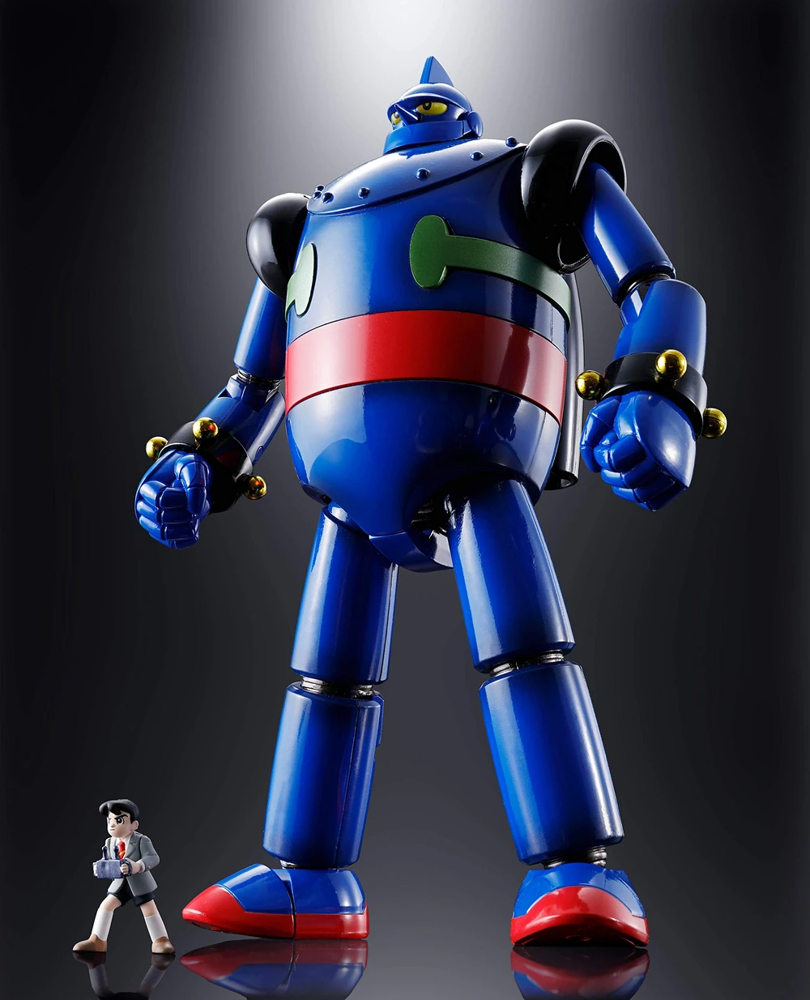
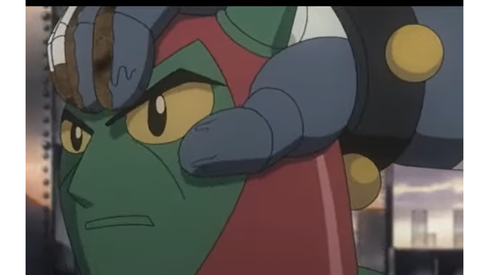
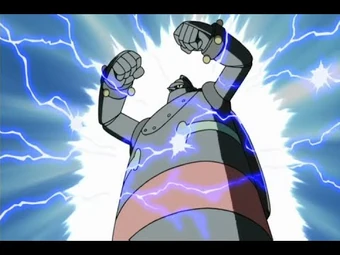

Información del Personaje
Origen: Japon
Altura: 50 metros
Peso: 50 toneladas
Alianza: PROTOTIPO DE DEFENSA CLASE HISTÓRICA (Retirado)
Historia
Tetsujin 28-Go, conocido internacionalmente como Gigantor, fue el primer robot gigante utilizado para la protección civil y la defensa contra amenazas colosales, incluyendo los primeros brotes de actividad kaiju documentados en Asia oriental. Desarrollado originalmente como un arma de guerra en la postguerra japonesa, su creador, el Dr. Kaneda, y su hijo Shotaro Kaneda, reconfiguraron sus funciones para convertirlo en una fuerza de protección para la humanidad.
Tetsujin 28-Go es controlado remotamente por Shotaro, quien se convirtió en uno de los primeros pilotos civiles reconocidos por la WKDF. Aunque carecía de inteligencia artificial, su movilidad, fuerza bruta y versatilidad le permitieron enfrentarse con éxito a criaturas descomunales que amenazaban ciudades costeras.
Inicio de la Era WKDF
La WKDF considera a Tetsujin 28-Go como un pilar fundacional de la defensa antikaiju. Su primera intervención oficial ocurrió durante el Incidente de la Bahía de Osaka (1957), donde enfrentó a una criatura marina designada “KAI-01”. Esta fue la primera colaboración informal entre el gobierno japonés y lo que se convertiría en la fuerza global WKDF.
Legado WKDF
Aunque tecnológicamente superado por Jaegers modernos y mechas actuales, Tetsujin 28-Go es recordado como el primer símbolo de esperanza mecánica. La WKDF mantiene su cuerpo restaurado en una bóveda honoraria en Japón, siendo visitado por pilotos y cadetes como parte de la ceremonia de graduación; además, su estructura y diseño sirvieron de inspiración para el desarrollo de unidades mecha como Jet Jaguar y Gipsy Danger, y para establecer el modelo de colaboración entre piloto humano y robot gigante, base del entrenamiento WKDF.
Estado Actual
Actualmente fuera de servicio, Tetsujin 28-Go se mantiene en condiciones operativas bajo el Protocolo Centinela Azul, un acuerdo de preservación tecnológica. Si bien no está destinado al combate, puede ser reactivado en caso de emergencia extrema, bajo la supervisión de la división de reliquias tecnológicas WKDF.
Tetsujin 28-Go fue el primer robot que inspiró una nueva era de defensa global. Su impacto psicológico y tecnológico en la lucha contra los kaijus es incuestionable. La WKDF lo considera un héroe silencioso y un ícono que marcó el inicio de la resistencia humana frente a lo imposible.
Imagen del Sujeto
Habilidades
Jetpack
Gigantor tiene un Propulsor que le permite volar a velocidades supersonicas y con precision
Fuerza superior
Gigantor puede facilmente aplastar auto con solo pisarlos y destruir cabezas de otros robots con una sola apretada.
Manipulacion y absorcion de electricidad
Gigantor es capaz de absorber enormes cantidades de energia para liberla como poderosas descargas, una barrera electrica que proteja su alrededor y potenciar los otros ataques de Gigantor.
Videos de Metraje Encontrado
Video de Evidencia 1: Muestra de poderes en 2004
Video de Evidencia 2: Momentos importantes de despliegue en 2007
Video de Evidencia 3: Gigantor vs Black Ox
Video de Evidencia 4: Lanzamiento fallido en 2008